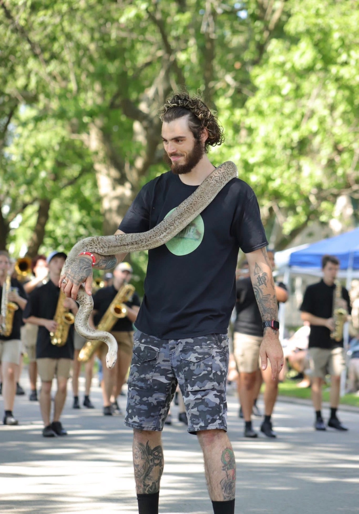

Our goal is to reduce the amount of exotics being released into the wild and rehabilitate animals in need of care. Exotic animals are demanding pets! We want to prepare owners for the difficulties of ownership. Additionally, we teach about dangers of owning and releasing invasive species into the wild to advocate for the natural biodiversity of the environment.
We are here as a community resource for people facing unfortunate circumstances in life. When someone can no longer care for their pets, we take in their exotic animals. While in our care, each animal is provided the proper environment to undergo the most stress free rehabilitation possible.
We are a nonprofit exotic animal rescue organization based in Kankakee, IL. Our orginization is dedicated to rescuing exotic animals and educating the public. You can verify our nonprofit status here; our EIN number is: 88-1474420. We are funded by the public through educational shows, fundraisers, and grants. The funding we receive goes directly towards our rescues' care and the facility's maintenance.
We are always looking for volunteers and foster families. If you are interested in volunteering or fostering, please contact us by calling 708-704-9911.
We take in surrendered animals and rescue wildlife. For more information on rescuing or surrendering exotic animals, please visit our contact us page for more information. Do not drop off animals without talking to us first, thank you.
Some of our surrendered exotic animals are eligible for adoption! We make postings about our adoptable rescues on our facebook page.